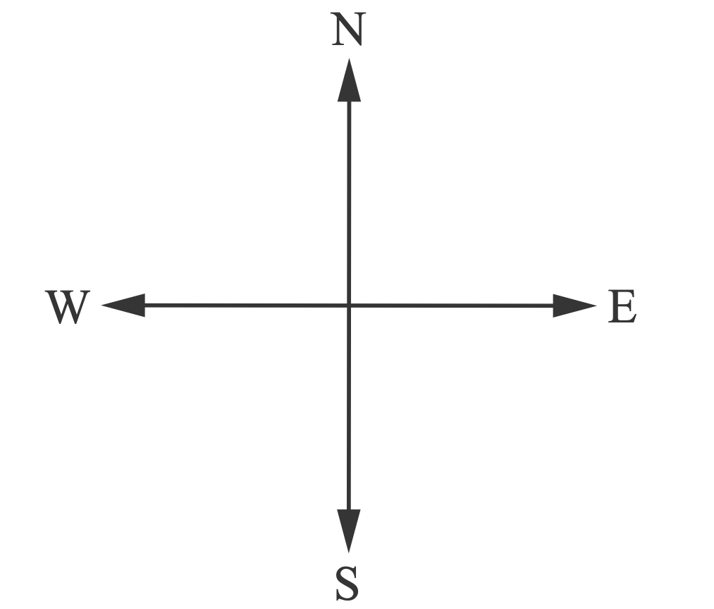

Exercise 1
Answer the following questions:
3. If you stand with your back facing the direction where the sun rises, which direction of the Earth will be:

Answer the following questions:
3. If you stand with your back facing the direction where the sun rises, which direction of the Earth will be: